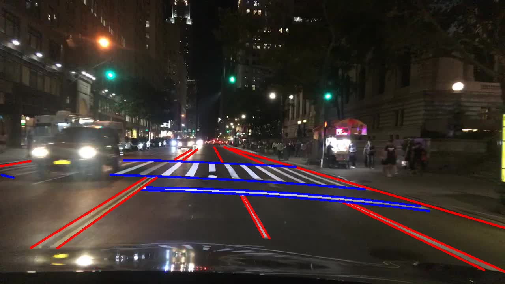
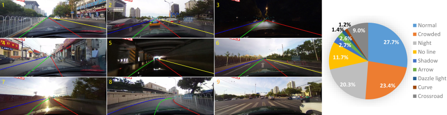
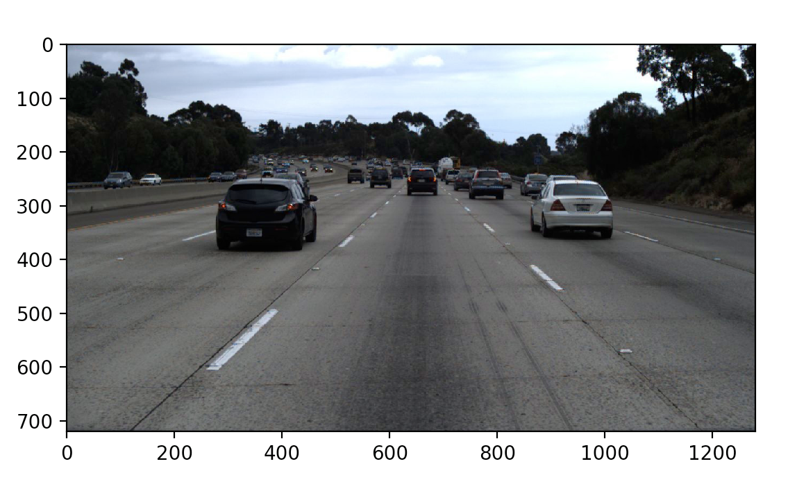
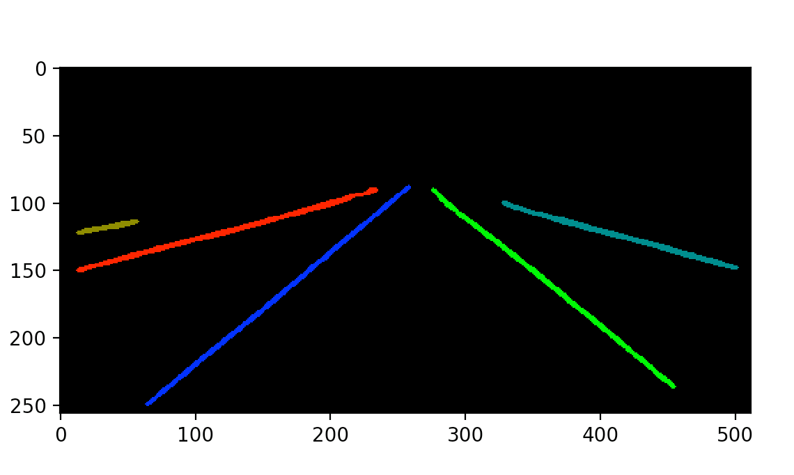
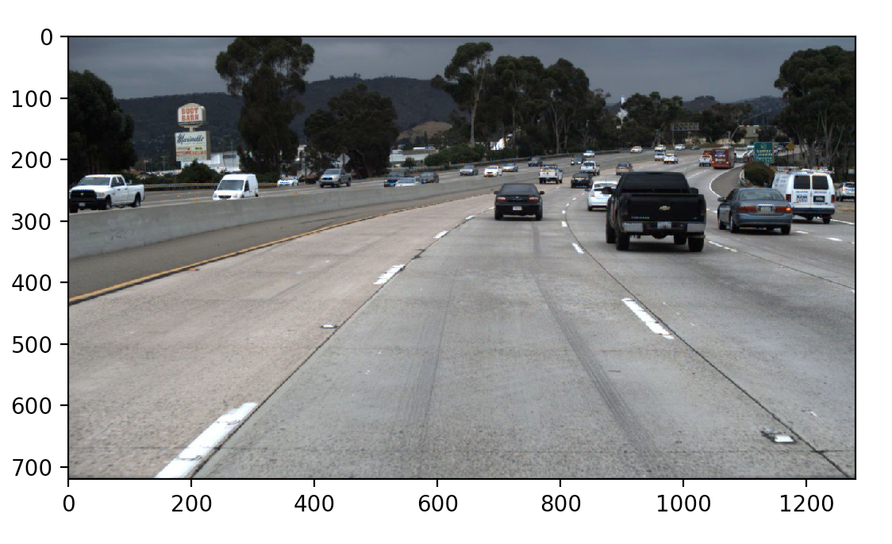
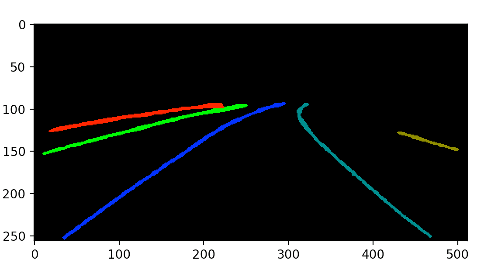
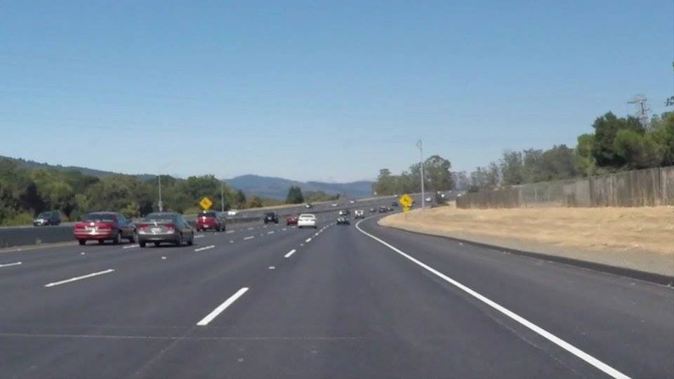
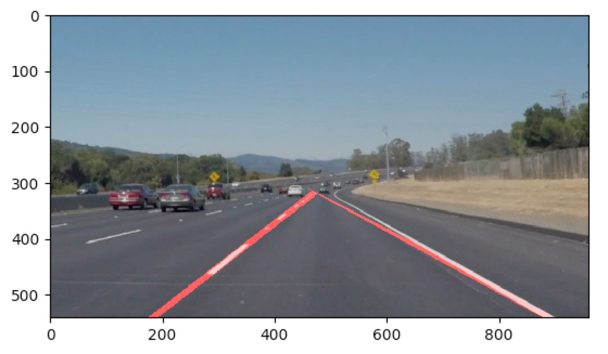
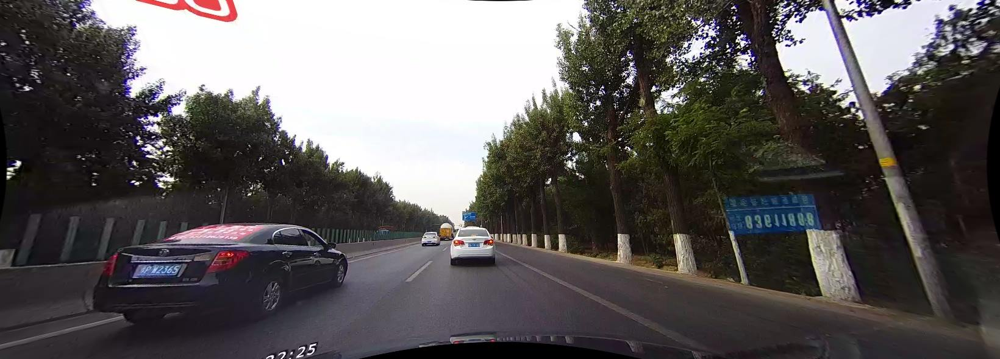
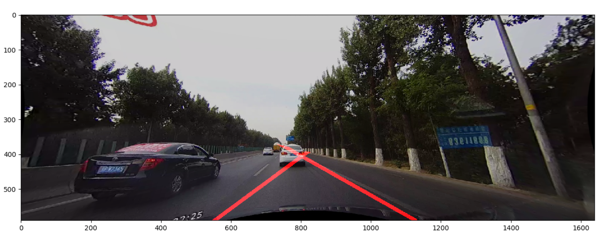

Soham Gadgil, Ashwin Natarajan, Shaurye Aggarwal, William Xia, Abhishek Tumuluru, Mohit Chauhan Fall 2018 CS 4476 Computer Vision: Class Project Georgia Tech
Abstract
Lane detection is an increasingly relevant topic given the advent of driver-assist technologies, self-driving vehicles, and automation. Implementing a Computer Vision approach in openCV to detect lanes and overlay them is one of the main parts of our project. In addition to pure Computer vision methods, a machine learning method combined with some computer vision is a potential way to solve this problem. We compare the different approaches and point out conditions wherein different approaches perform better.

Introduction
The goal of our team’s project is divided into three sections. The first is to build a computer vision system that can detect which lane on the road a car is driving on. Secondly, we aim to detect the degree by which the road is turning in the event that there is curvature on the road. The third part of our project is the comparison of the computational performance and outputs of a Machine Learning model versus our classic Computer Vision approach. CNNs, Deep learning, and K-means are potential machine learning models that can be used for this purpose. The input to the classical system will be a short video of a car driving along a road that has clear lane markings on it. The output will be a video of the car driving along the road along with an overlaid image that shows which lane the car is on. For example, if the car is in the middle lane in the video, then the output video would show the car moving with the middle lane having a different color than the other lanes. The output video will also contain a varying numeric value at the top of the screen that indicates how many degrees the road is curving by. This could be a number between 0 and 360 degrees or a number representing the radius of curvature, depending on what gives more information about how much to turn the steering wheel. These two pieces of information (current lane and degree of turning) are the first steps in building an steering system for an autonomous car since the car will be able to steer such that it stays in its current lane, while also adjusting to the curvature of the road. Like the Computer Vision approach, the ML model will take in a video of a car driving along a road and it will return a similar video with highlighted lane markings overlaid on top of the roads in the frames.
Approach
To achieve lane detection our team will focus on two approaches: classical and machine learning methodologies. Part of our objective will be to compare the performance of the two paradigms, namely the speed, accuracy, and resource of the algorithms. To achieve these comparisons, we will measure the performance on a chosen dataset and use both types of approaches to build a better understanding of how quickly each algorithm can accomplish the task. Speed will be measured by how fast each algorithm completes the lane detection, accuracy will be measured by how close the algorithms are to ground truth, and the resource consumption will be measured by the amount of memory and code length used.
The preliminary classical approach to lane detection has been implemented. It is able to detect lanes in image frames, albeit not perfectly. There are still tweaks needed to be made to the hyperparameters. Also, different techniques need to be compared to for the individual steps to determine the optimal method. The current results are displayed in the subsequent sections. As implemented currently, the algorithm has the following steps. The input of each step is the output of the previous step:
Define a line class in order to draw line on image and use x,y coordinates to define a line
Get a test image directory
Specify a specific test image
Obtain ground truth data from provided text file
Preprocess the image so that image is in grayscale and image is blurred with Gaussian blur
Calculate Edges with Canny Edge Detector
Apply Hough Transform to detect lines
Filter two lines such that lines match what is expected for left and right lane lines
Begin Drawing lines
Define a polygon mask for lanes
Mask lines such that lines only are drawn on relevant section of road
Evaluate the error compared to the ground truth using distance of a point to a line
For the machine learning implementation, we chose LaneNet, a deep, branched, multi-task network for lane detection and H-Net as described in [1]. This system claims to be robust to road scene variations unlike many of the classical lane detection techniques. Compared to other machine learning techniques this network doesn’t require predefined and fixed number of lanes in order to detect them and is further robust to lane changes.
The network (and the problem) in this technique is branched into two: segmentation branch and lane embedding branch. The segmentation branch is tasked with deciding whether a pixel belongs to a lane or not and it outputs a binary segmentation map. This part of the network is trained using the standard cross-entropy loss function. Using the output of the segmentation branch, the lane embedding branch then disentangles the lane pixels. It outputs an N-channel embedding per pixel where N is the number of embeddings by using the clustering loss function exploited for distance metric learning as proposed in [2]. This branch produces each embedding in such a way such that embeddings of the pixels that are in the same lane are as close as possible and the embeddings of the pixels belonging to different lanes as far as possible. Due to this fact, the pixels of the same lanes are then clustered using an iterative process that ends when all pixels have been assigned to a lane.
Given an input image, the networks outputs a map where each lane pixel is labeled with a lane id. To actually fit curves to the lane, instead of using the standard “bird-eye” transformation the system employs H-Net which outputs the optimal transformation H given an input image. This makes the curve-fitting robust to ground-plane changes. The transformation H is then used to transform each lane pixel and fit a 3rd order polynomial. Each lane’s polynomial is then projected back into the image space.
Experiments and results
Since the primary focus of the project is to find the optimal lane detection algorithm and comparing the two different approaches used, most of the experiments will involve running the algorithms on test datasets and analyzing and comparing the results for areas of improvement. This will involve test videos of two types:
Optimal conditions for lane detection - Good lighting conditions, well-marked lanes which remain relatively straight for a long time (such as a highway), no interruptions between lanes (such as a pedestrian crossing). Such videos are expected to result in good accuracy in detecting lanes.
Sub-Optimal conditions for lane detection - Poor lighting conditions due to cloudy weather or driving at night, poorly-marked lanes with slight discontinuations, lanes which curve (such as in a turnaround), possible interruptions between lanes like at an intersection. Such videos are expected to be less accurate for detecting lanes and would be the ones requiring improvements in the algorithm.
This project compares two approaches of detecting lanes. The first one is the classical approach involving image manipulation and feature detection. The classical approach does not need a dataset per se, since there is no “learning” involved. The second one is using Machine Learning models to train using labelled data and to detect lanes in unseen data. Collecting our own data would be a challenge so we will rely on existing datasets to provide us with our training data. We plan to use two datasets as outlined:
Berkeley Deep Drive Dataset (BDD100K): This dataset, provided by the berkeley artificial intelligence research, is the largest and most diverse driving video dataset with annotations to date. It includes 100,000 video sequences with 120 million images across different times of the day and weather conditions. There is a keyframe sampled at the 10th second from each video with annotations involving lane markings.
CULane Dataset: This is a large scale dataset geared toward research on lane detection. It includes more that 55 hours of video with the extraction of 133235 frames. The dataset is manually annotated for each frame and the test set is divided into normal and 8 challenging categories.

CULane Dataset examples and distribution
In the classical approach, we had to make some decisions regarding the hyperparameter values. The parameters set are discussed below:
Gaussian kernel size: 17x17 - The kernel size drives the filter amount. A larger size, corresponding to a larger convolution mask, will result in greater filtering. This helps in better noise reduction but reduces the quality of the image. Thus, a sweet spot needs to be found which accounts for both factors
Canny Edge Threshold:
Hysteresis Low: 50 - Any edges with an intensity gradient that is lower than this value can be considered non-edges
Hysteresis High: 80 - Any edges with an intensity gradient that is higher than this value can be considered edges
Any intensity gradient value that is in between the two values are considered edges based on the connectivity
Lane Filtering: After we obtain all candidate lines, we filter the lines such that we only keep lines that are between 30 and 60 degrees, which can be approximated by filtering slopes of 0.5 and 2. These degree requirements reflect the fact that from the perspective of a camera in a car, the lanes will appear to be skewed between those values and thus an assumption can be made as to how the lines are oriented
Error in the classical approach is calculated using the formula to determine perpendicular distance from a point to a line. The line in this case is the calculated lane line and the point is the ground truth feature point for the respective lane. Ideally, the distance would be zero, as the line predicted would perfectly match the feature set for ground truth. The errors are displayed below in the qualitative results section under each respective image set.
For the machine learning approach we found the implementation for the LaneNet model on Github . We further used their pre-trained model that was trained on the TuSimple Data Set. Next we used a subset of CULane Dataset to get preliminary results and accuracy. We plan to calculate the accuracy using the average number of correct pixels. After looking at the results from classical approach as well, we are going to decide a common metric to compute the accuracy and compare the overall results.
The reason we used different evaluation metrics for the two approaches was to compare and contrast the different methods to determine which one worked better. In the future update, we will decide on the metric which proves to be more accurate and use it for both approaches.
A successful project would include a good accuracy for lane detection and radius of curvature, for both the above-mentioned approaches, especially for the suboptimal dataset. We wish to aim for an accuracy of ~95% for optimal video frames and ~86% for suboptimal video frames. These numbers have been obtained from the past research that has been done in the field of lane detection. The completed project would also involve detailed analysis of the two methods, providing comparative statistics which are useful and quantifiable. Besides accuracy, the comparison metrics will evaluate the two approaches based on their speed, memory requirements, frame-size of the input etc. Such a comparison will assist in providing specific conditions in which one approach proves to be better than the other and detailing which method should be used based on the constraints presented. For instance, one approach might be better suited than the other if the use case can sacrifice a small percent of accuracy for obtaining optimal speed.
Qualitative results
Machine Learning Results

Input Image 1

Extracted lane markings from the input image 1

Input Image 2

Extracted lane markings from the input image 2
Classical Results
The images below are an example successful input and output of our algorithm. As you can see, the overlaid lanes match up quite well with the actual lanes on the road. Some notable characteristics of the image below are:
Good lighting conditions
Wide spacing between vehicles
Clearly painted lane markings
Many lane markings (broken and solid lanes)
Good lighting conditions and clearly painted markings allow the painted lanes themselves to be more easily identifiable by the Canny edge detector. More lane markings is more data for the Hough transform to identify confident lines.

Input Image

Image with overlayed lane markings
Left lane average pixel error: 6.3
Right lane average pixel error: 2.1
Bad Image Example
Unlike the image above, the drawn lanes in the image below are less than ideal. This could be for various reasons, of which poor lighting is the most likely. In addition to the low lighting, It is clear that the lanes are painted much fainter than the image above which makes it possible that the lane data is lost when the image is converted to grayscale, making edges more difficult to pick up by the Canny edge detector. It is evident to us further preprocessing can be done to increase the brightness and contrast of low-lighting images before applying the Canny edge detector. One more notable aspect of this image is that there is only one broken lane marking on the left of the image unlike the successful image above which has many lane markings. It would be reasonable to conclude that the accuracy of the Hough transform is dependent on the number of broken lane markings.

Input Image

Image with overlayed lane markings
Left lane average pixel error: 27.93
Right lane average pixel error: 15.4
References
Neven, Davy, Bert De Brabandere, Stamatios Georgoulis, Marc Proesmans, and Luc Van Gool. "Towards End-to-End Lane Detection: an Instance Segmentation Approach." arXiv preprint arXiv:1802.05591 (2018).
De Brabandere, Bert, Davy Neven, and Luc Van Gool. "Semantic instance segmentation with a discriminative loss function." arXiv preprint arXiv:1708.02551 (2017).